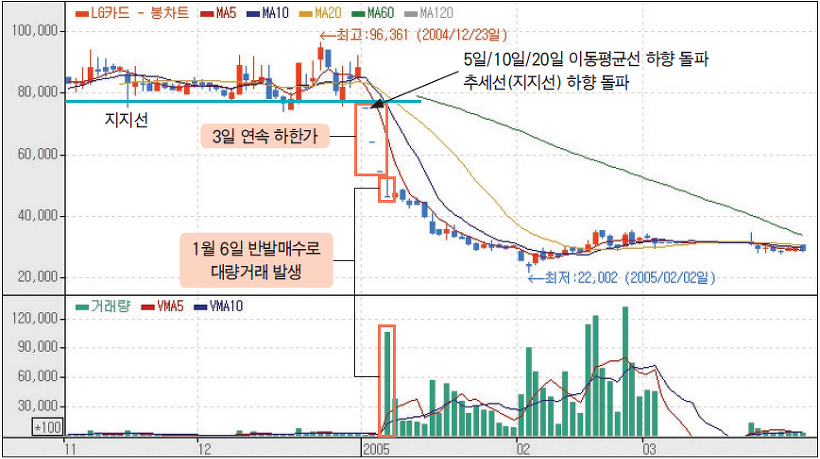

제로금리시대 투자를 하자
- 투자의 원칙
- 가치평가의 방법
- 주가의 흐름과 차트분석
주가의 흐름과 차트분석
차트분석의 종류
1. 추세 분석
추세 분석(Trend Analysis)은 주가의 움직임 속에서 추세선이나 추세대를 찾아보고 또 추세선이 언제 붕괴되는가를 관찰함으로써 주식의 매매시점을 포착하는 기법입니다. 지지선과 저항선 의 설정, 추세선의 신뢰도, 추세선의 수정, 추세선의 전환 등을 관찰해서 투자판단에 이용하는 기법입니다.
2. 패턴 분석
패턴 분석(Pattern Analysis)은 추세선이 변화할 때 나타나는 여러가지 주가 변동 패턴을 정형화해 놓고, 이를 분석해 향후 주가를 예측하는 기법입니다. 과거 주가 흐름을 통해 검증된 패턴을 현재의 주가 흐름에 대입해 주가의 등락을 예측하는 기법입니다.
3. 장세 분석
장세 분석(Market Analysis)이란 주식시장에 나타나는 각종 신호들을 파악하고 그것을 시장언어(Language of the Market)로 해석하여 장세를 판단하는 방법입니다. 증권시장의 흐름을 강세시장(Bullish Market)과 약세시장(Bearish Market)으로 나누고 이들 시장의 사이클을 알아내는 것이 그 목적입니다.
4. 목표치 계산
목표치 계산(Counting)은 여러 가지 차트분석 기법을 이용하여 주가가 어느 선까지 상승하거나 하락할 것인가를 예측하는 방법을 말합니다.

출처